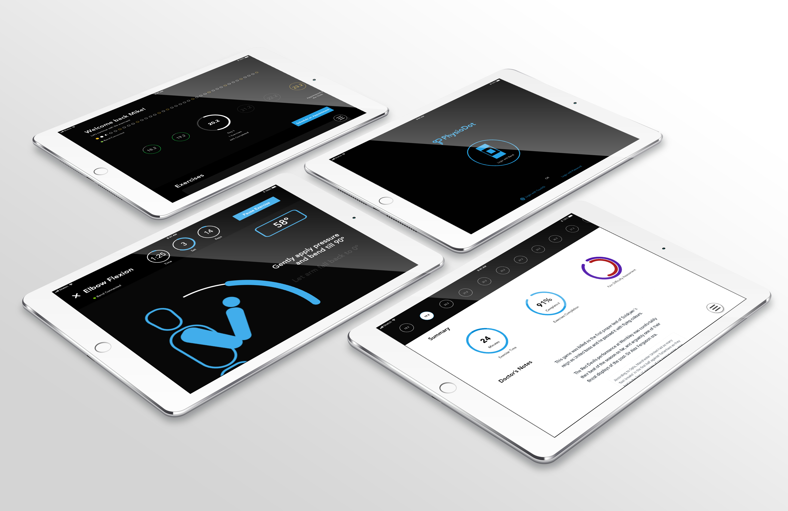
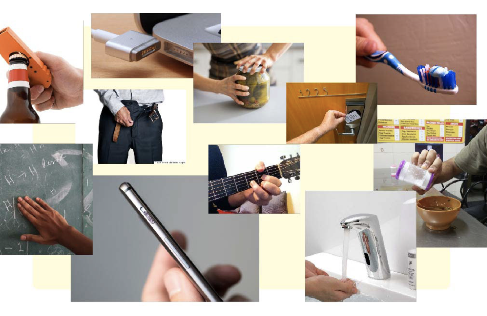
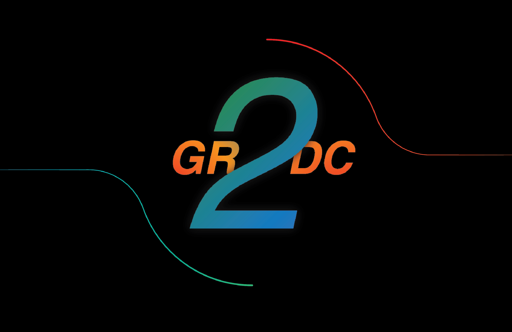
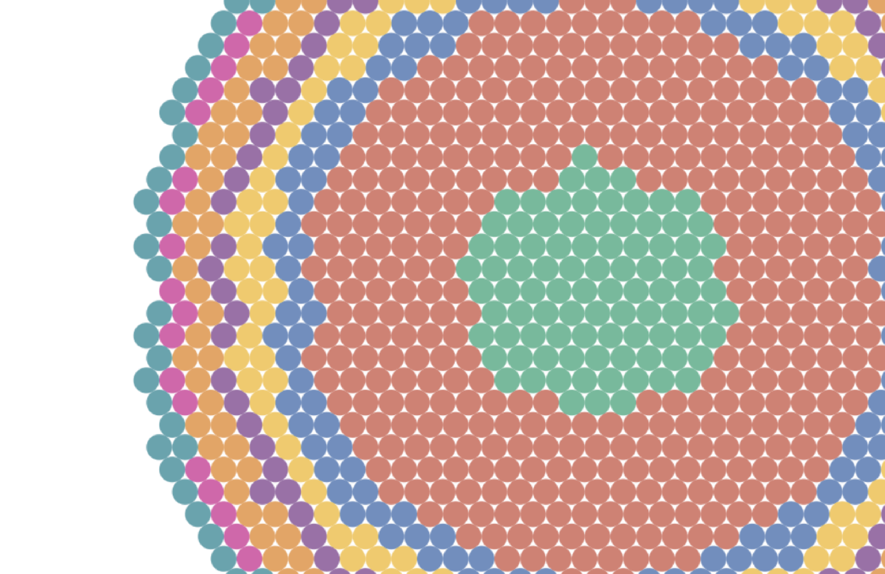

a
Rk
About
Projects
Contact
PhysioDot
PhysioDot is an application that allows patients to perform their physiotherapy exercises from the comfort of their homes.
Check it out on Medium...

Physical Micro-interactions
A study of micro-interactions in the physical world, resulting in the creation of a tool to help classify physical objects and add to a framework designed as a part of the study.
Check it out on Medium...

GR2DC
GR2DC is an application that channels the power of data collection and analysis to assess driver behaviour and help provide meaningful corrective actionable insights through real-time and post journey feedback.
Check it out on Medium...

Roles in Data Viz
Roles in Data Viz is a declarative data story on the various professions people involved in data visualisation take up and how they stack up against each other. Feel free to explore and make your own stories!

Physical Micro-interactions
A study of micro-interactions in the physical world, resulting in the creation of a tool to help classify physical objects and add to a framework designed as a part of the study.
GR2DC
GR2DC is an application that channels the power of data collection and analysis to assess driver behaviour and help provide meaningful corrective actionable insights through real-time and post journey feedback.